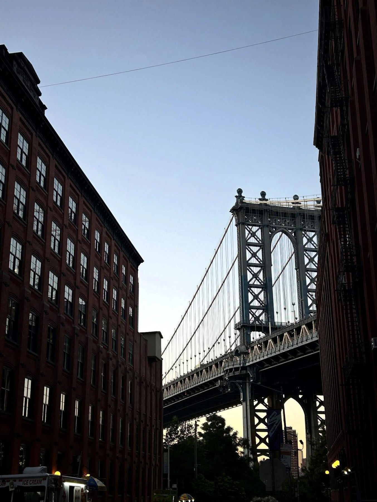
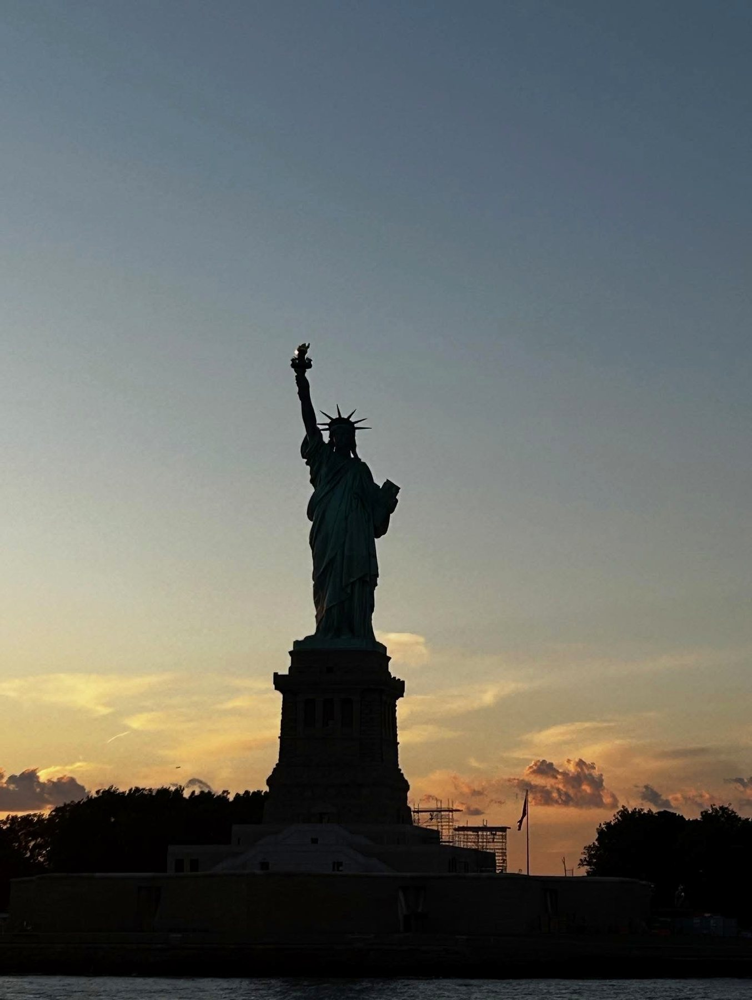
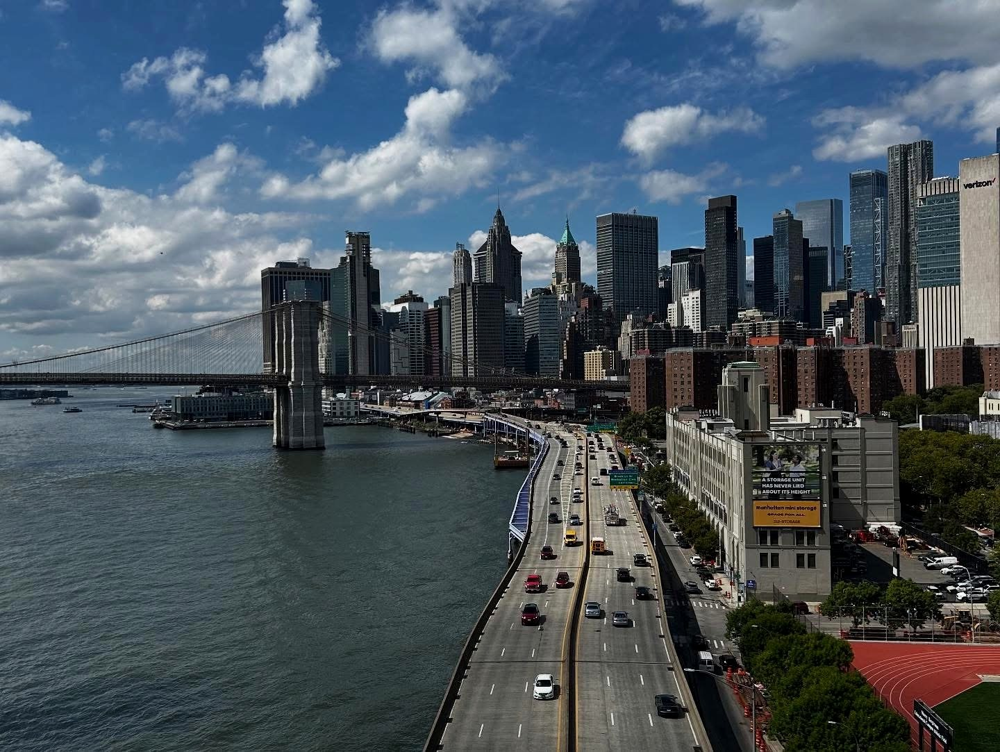

Lower Manhattan
Battery Park, Financial District, 9/11 Memorial, Chinatown, Little Italy, NoHo e Greenwich Village.
Sei giorni a piedi dentro una città che cambia identità a ogni quartiere: dalla memoria di Lower Manhattan alla luce di Midtown, dalla distanza di Brooklyn alla profondità di Harlem.

New York non si è lasciata riassumere in un solo panorama. Il viaggio è diventato un continuo cambio di ritmo: Wall Street e Chinatown nello stesso giorno, Central Park dopo Times Square, Brooklyn osservando Manhattan da lontano, Harlem seguendo una storia ancora diversa.
Ho separato il materiale in due pagine: l'itinerario pratico dei sei giorni e il racconto, più personale, di quello che è rimasto dopo averla attraversata.
Ponti, skyline e luce: una piccola selezione degli scatti che raccontano meglio il ritmo della città.



Battery Park, Financial District, 9/11 Memorial, Chinatown, Little Italy, NoHo e Greenwich Village.
Rockefeller Center, St. Patrick's Cathedral, Central Park e la città vista dall'acqua al tramonto.
Williamsburg, Bushwick, Brooklyn Heights, DUMBO e i ponti che ridisegnano lo skyline.
Greater Refuge Temple, Apollo Theatre, Sylvan Terrace e Hamilton Heights.
American Museum of Natural History, Guggenheim e MoMA negli ultimi giorni.
Empire State Building e quei momenti in cui Manhattan finalmente si lascia leggere.